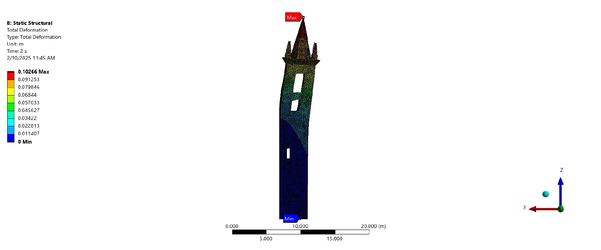

Campanile di San Giuliano, Genova
Valutazione sismica di una torre medievale in pietra nel quartiere di Albaro, dalla nuvola di punti all'analisi non lineare e a un intervento compatibile con l'edificio storico.
L'edificio
La chiesa di San Giuliano, sulla costa ligure, risale almeno al XIII secolo. Il campanile è costruito in pietra tradizionale ligure, poi riparato con mattoni e intonaco: pianta quadrata, aperture ad arco, volte a crociera a ogni livello e copertura ottagonale con quattro piccoli pinnacoli agli angoli.
1. Nuvola di punti
Il lavoro è partito dalla nuvola di punti dell'intero complesso. Il campanile è stato estratto, così che la sua geometria reale, con tutte le irregolarità di un edificio secolare, diventasse la base del modello.

2. Modello 3D
Dalla nuvola di punti è stato costruito in AutoCAD il modello 3D della torre: piante dei livelli, volte a crociera (dall'intersezione di due volte a botte), riempimenti delle volte e copertura ottagonale. I dettagli sono stati eliminati con semplificazioni controllate, per evitare errori nella mesh del software di calcolo.

3. Analisi non lineare in ANSYS
Sono state definite proprietà distinte per pareti, riempimenti e volte, e il comportamento non lineare della muratura è stato simulato con il modello di Drucker–Prager. Dati i pochi dati sui materiali, le resistenze sono state ridotte con un fattore di confidenza. La mesh è più fitta nelle volte (4 cm) e più rada nelle pareti (20 cm).
- Sotto peso proprio lo spostamento massimo è di circa 7 mm, con concentrazioni di tensione dove i riempimenti incontrano pareti e volte.
- Nell'analisi sismica l'accelerazione orizzontale è stata aumentata per passi. La torre resta stabile fino a circa 3,5 m/s² in X e 3,3 m/s² in Y.


4. Proposta di intervento
L'obiettivo era rinforzare la torre senza snaturare il comportamento e l'identità di un edificio in pietra:
- Tiranti o cavi in acciaio: più confinamento senza toccare il materiale originale.
- Cerchiature in materiali reversibili come legno, acciaio inox o FRP, a più livelli.
- Evitare irrigidimenti eccessivi e aggiunte in calcestruzzo armato, e usare malta di calce invece del cemento.
Cosa significa per gli edifici di Urmia
Lo stesso metodo, rilievo accurato, modello realistico, analisi e minimo intervento necessario, funziona per gli edifici in mattoni e in terra cruda di Urmia. Ogni edificio antico va prima conosciuto, poi rinforzato.